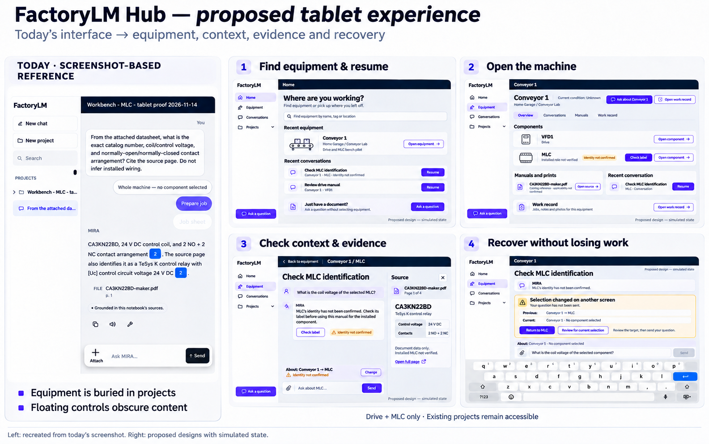
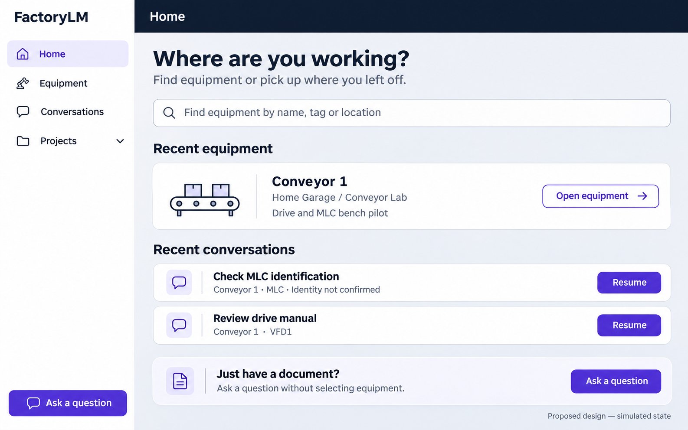
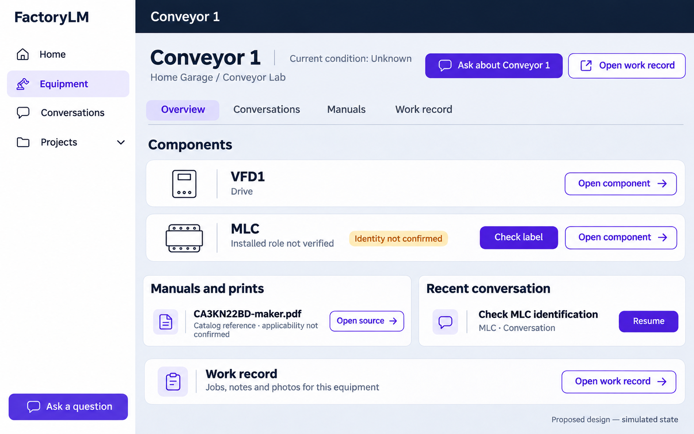
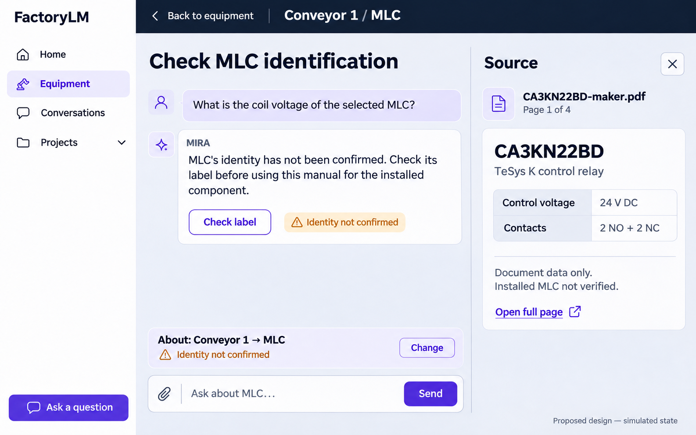
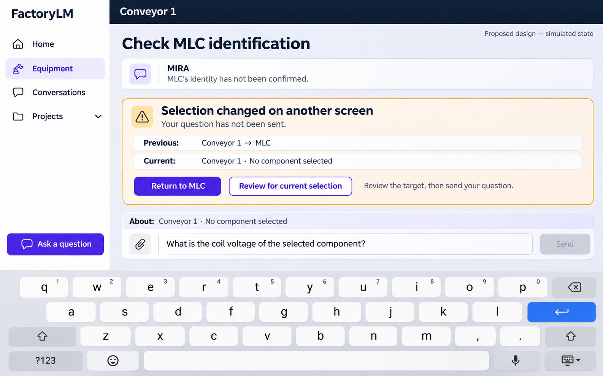

New revision: Factory hierarchy for several lines and thousands of components. Uses the FactoryLM workspace style guide and replaces the small-bench navigation proposed below.
Proposed design — simulated state. These are static visual mockups, not an interactive app, deployed change or field-verification result. The MLC remains unconfirmed. No machine operation is shown.
Overview
The left panel is a screenshot-based reconstruction. The four proposed screens show the intended flow.

1. Find equipment and resume
Start with the named equipment or a specific conversation. Projects remain accessible.

2. Open Conveyor 1
Keep VFD1 and MLC inside one machine workspace, alongside manuals, conversations and existing work records.

3. Check context and evidence
Keep the selected component visible. Document facts do not establish the identity or condition of the installed MLC.

4. Recover a changed selection
Preserve the draft and require an explicit target decision before sending. Recovery actions remain above the keyboard.

Original captures and design provenance
The comparison board's left panel is a generated reconstruction, not an unchanged screenshot. The original private captures remain in their evidence directory:
The source panel in screen 3 illustrates catalog facts; it is not a reproduction of the original PDF page. The connected implementation should retain access to the original source page.
Generated with the built-in image generation tool. Exact prompt set · Image dimensions and hashes · Review notes